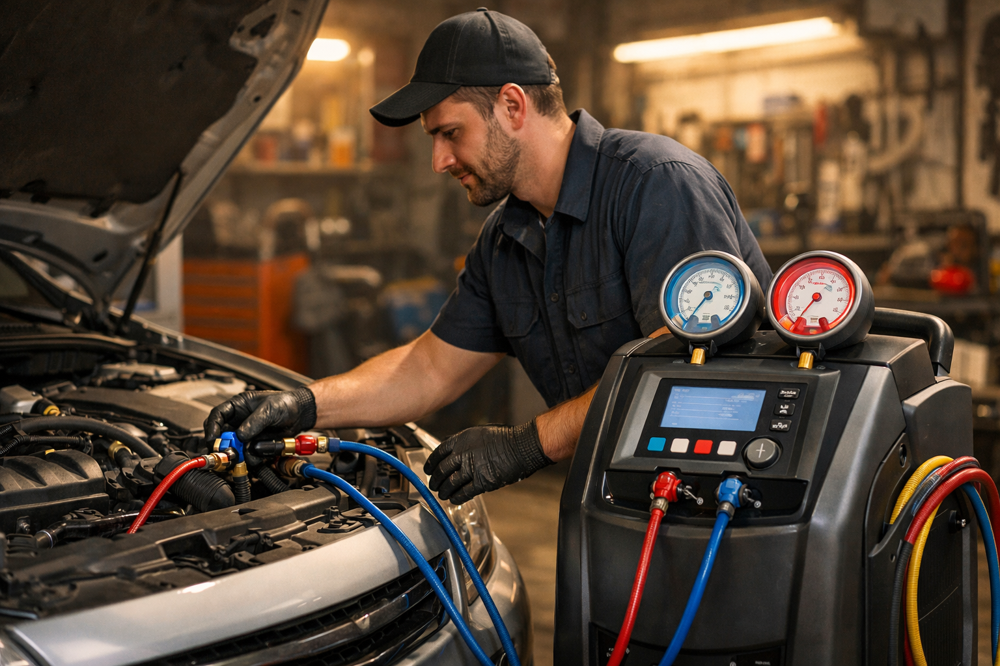
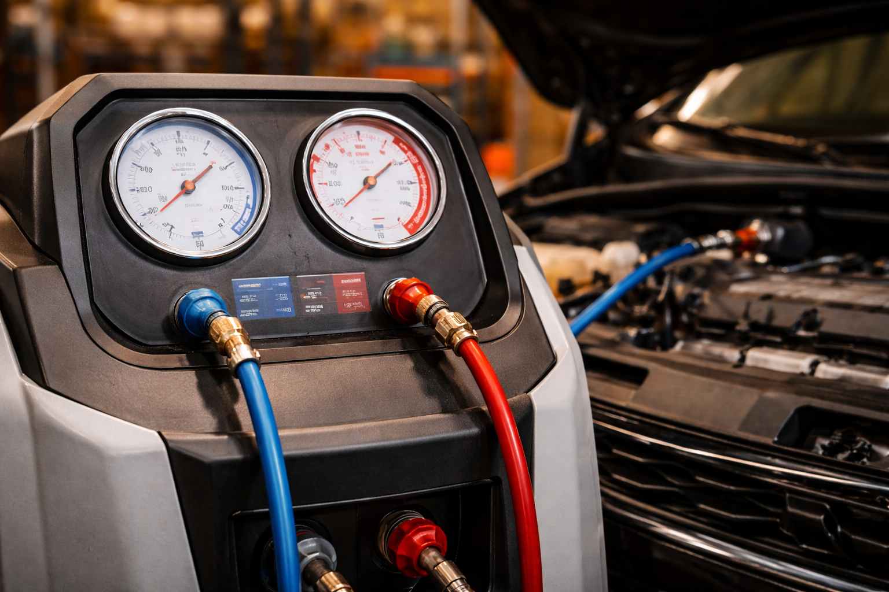

Entretien et recharge de climatisation pour un confort optimal en toute saison. Ali-Ka, votre expert clim auto à Etterbeek.

La recharge de clim, arnaque ou nécessité ? On lit tout et son contraire sur les forums. Voici ce qu'il en est vraiment : un circuit de climatisation perd naturellement entre 10 et 15 % de gaz réfrigérant par an, même sans fuite avérée. Autrement dit, au bout de deux ou trois ans, votre système tourne à vide et force sur le compresseur. Ce n'est pas du marketing, c'est de la physique. Chez Ali-Ka, Avenue des Casernes 10 à Etterbeek, on vous montre la pression relevée avant et après intervention. Pas de devinette, que des chiffres.
Et non, la clim ne sert pas qu'en été. Coincé dans les embouteillages autour de Schuman ou sur l'Avenue de la Couronne à Ixelles un matin de novembre, c'est elle qui désembue votre pare-brise en quelques secondes. Sécurité et confort, toute l'année, à Bruxelles comme partout. Un entretien régulier chez Ali-Ka, c'est la garantie que le système répond quand vous en avez vraiment besoin — pas seulement en juillet.
Pourquoi certains garages se contentent-ils de « recharger » et de vous rendre les clés ? Parce qu'un test d'étanchéité prend du temps. Chez Ali-Ka, on ne saute aucune étape. Voici exactement ce qui se passe quand vous nous confiez votre véhicule :
La règle simple : tous les 2 ans, faites vérifier le circuit. Mais faut-il attendre les deux ans si quelque chose cloche ? Non. Si l'air souffle tiède alors que le compresseur tourne, si le refroidissement met plus d'une minute à se faire sentir, ou si une odeur de moisi envahit l'habitacle dès que vous enclenchez la clim — passez chez Ali-Ka sans tarder. Un remplacement du filtre habitacle résout souvent le problème d'odeur à lui seul et booste les performances du système.
Petit détail que beaucoup ignorent : le gaz R1234yf, imposé sur les véhicules récents, coûte nettement plus cher que l'ancien R134a. Le Moniteur Automobile le confirme. Raison de plus pour entretenir le circuit régulièrement plutôt que d'attendre la panne sèche.
Vous êtes déjà sur place ? Groupez les interventions. Une vidange, un test de batterie, un coup d'oeil sur l'éclairage — tout se fait dans la même visite, et vous repartez prêt pour le contrôle technique. Notre atelier, à deux pas du Cinquantenaire, est accessible en quelques minutes depuis Woluwe-Saint-Pierre, Auderghem et tout l'est bruxellois.
Tous les 2 ans environ. Si l'air est moins frais ou met du temps à refroidir, une recharge est nécessaire. Ali-Ka à Etterbeek contrôle et recharge votre circuit.
Le prix dépend du type de gaz (R134a ou R1234yf). Contactez Ali-Ka au 02 647 47 01 pour un devis adapté à votre véhicule.
Les mauvaises odeurs proviennent de bactéries dans le circuit de ventilation. Nous réalisons un traitement antibactérien et remplaçons le filtre habitacle pour résoudre le problème.
Oui, quelques minutes par semaine suffisent pour maintenir le circuit sous pression et lubrifier les joints. Cela prévient les fuites et les pannes.
Un système de climatisation en bon état ne devrait pas nécessiter de recharge fréquente. Si votre clim perd en efficacité, c'est souvent le signe d'une fuite. Chez Ali-Ka à Etterbeek, nous réalisons systématiquement un test d'étanchéité avant toute recharge pour identifier et résoudre le problème à la source.